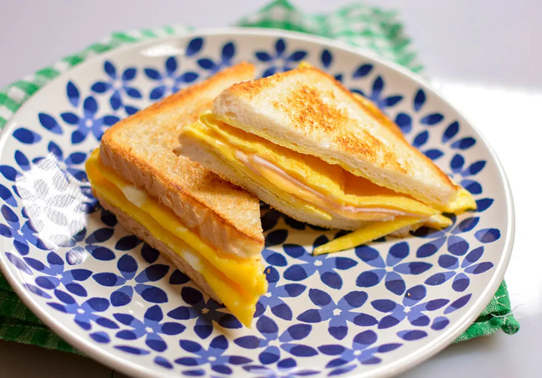

Powrót
tosty

Składniki
2 jajka
2 kromki chleba tostowego
łyżeczka masła
plasterek sera topionego
2 plasterki szynki
Jajka wbijamy do miseczki, dodajemy szczyptę soli i rozbijamy je widelcem.
Roztapiamy masło na patelni i wlewamy jajka, następnie kiedy omlet zacznie się ścinać kładziemy na wierzch dwie kromki pieczywa tostowego.
Kiedy jajka zetną się całkowicie, przekręcamy omlet na drugą stronę, tak aby pieczywo znalazło się na spodzie. Następnie zbieramy wystające brzegi omletu i zawijamy je tak, aby nie wystawały poza pieczywo.
Chwilę podsmażamy tosty z omletem, następnie kładziemy plasterki szynki oraz sera na wierzch i składamy tost jak sandwich.
W razie potrzeby pieczywo możesz jeszcze chwilę podsmażyć z obu stron. Smacznego!